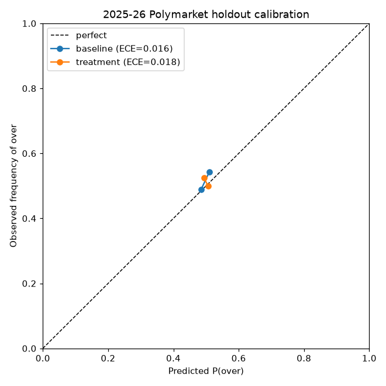
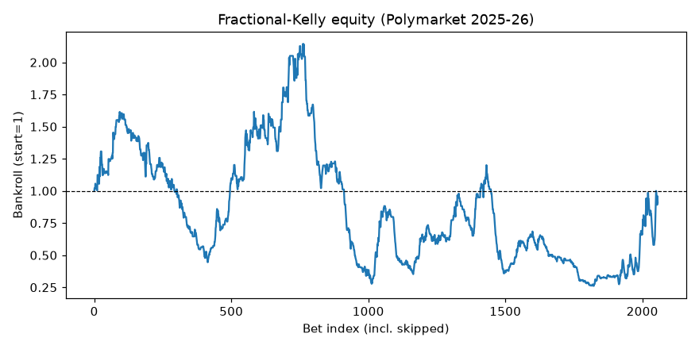

Dataset
5+ seasons of games, three officials, team form.
A research film · not a trading bot
A leakage-safe walk-forward backtest of NBA referee crews vs. prediction-market totals.
02 · Hypothesis
Some crews whistle more — tempo and free throws shift totals.
Assignments are public before tip. Info is free.
If Polymarket underreacts, over/under has an edge.
03 · What got built
5+ seasons of games, three officials, team form.
Features only from games before the tip being scored.
Baseline vs treatment — same frame, refs on/off.
Train past seasons. Test the next. No random splits.
Shuffle crew labels. Is the “edge” just noise?
Fractional Kelly on pre-tip Polymarket prints.
04 · Designed against cheating
Referee stats stop at the prior game. Current tip excluded.
Thin histories pull toward a time-varying league prior.
Hunt incremental edge — not the whole total.
Last Polymarket print before tip. Never settlement.
05 · The result is the comparison
Baseline
Market line + team / game form
No referee info
Treatment
Baseline + rolling crew features
The alleged edge
If treatment doesn’t beat baseline on out-of-sample log-loss / Brier — there is no edge.
06 · Headline numbers
0
Train games · 2018–23
0
OOS walk-forward games
0
Δ log-loss · treatment worse
0
Permutation p-value
07 · Verdict
Referee features did not beat the market + team baseline out of sample. Under this design, markets don’t leave this on the table.
08 · Charts from the study


09 · Open study
Full write-up, metrics, and leakage tests live in the repo.
Built by aarushkandukoori.com · hosted on project GitHub Pages